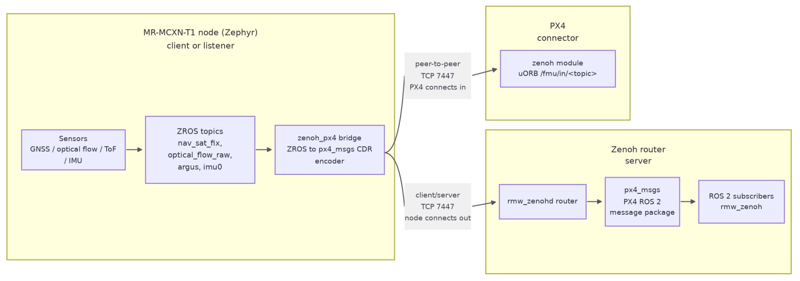

MR-MCXN-T1 Zenoh Communication Modes¶
Overview¶
This guide describes how to configure an MR-MCXN-T1 node to publish its sensor
samples as CDR-encoded px4_msgs over zenoh. The zenoh_px4 bridge encodes each
ZROS sensor sample as a CDR px4_msgs payload and publishes it on
<domain>/fmu/in/<topic>/... over zenoh-pico. The MR-MCXN-T1 node supports two link
topologies that are covered by this document (the CDR wire payload is
byte-identical in both):
client/server — the MR-MCXN-T1 node is a zenoh client that connects to an zenoh router (the server), typically on a Linux host / NavQ95 A55 core running Linux. The samples then appear as native ROS 2 topics to any
rmw_zenohapplication.peer-to-peer — a direct, router-free link to PX4. Here the MR-MCXN-T1 node is the listener and PX4 connects to it; the samples are fused into PX4’s uORB. There is no ROS 2 graph discovery; only the CDR payload matters.
It also lists general commands for checking the current network interface, ROS 2 and the zenoh state.
Topology¶

Prerequisites¶
Build the MR-MCXN-T1 GNSS / OFLO / IO application and flash it on MR-MCXN-T1. Follow these MR-MCXN-T1 build and flash steps.
The end-device the MR-MCXN-T1 node is communicating with, depending on the setup:
Zenoh router (zenoh server) running on a Linux host / NavQ95 A55 core running Linux. If NavQ95 A55 is used, follow these ROS2 setup steps.
PX4 device (zenoh peer) running on RT1176, Tropic, NavQ95 M7 core.
The MR-MCXN-T1 node’s Ethernet interface must have an IP address on the same subnet as the server/peer it communicates with (rmw_zenoh, PX4 target device).
Default MR-MCXN-T1 node configuration and general commands to check its current state¶
Each application ships with a different static IP address:
Application |
MR-MCXN-T1 node IP |
Zenoh mode |
Locator |
|---|---|---|---|
|
|
|
|
|
|
|
|
|
|
|
|
The mode and the locator are runtime parameters set from the shell; the values
above are only the power-on defaults supplied by the application prj.conf.
A config net change is staged only — the session is reopened on the explicit
zenoh_px4 restart.
Network interface commands¶
Check the current network interface status (such as the IP address and the link state)
net iface
Confirm oper=UP, carrier=ON and 100 Mbits full-duplex before anything else.
Network interface stats
net stats
Show the active network connections — look for an ESTABLISHED entry to port 7447:
net conn
ZROS commands¶
List every ZROS topic on the MR-MCXN-T1 node
zros topic list
Show which ZROS nodes are running (zenoh_px4 must be present)
zros node list
Inspect the ZROS topics (example: OFLO application)
zros topic echo optical_flow_raw
zros topic info optical_flow_raw
Zenoh commands¶
Check whether the zenoh is running
zenoh_px4 status
Scenario 1: MR-MCXN-T1 node (client) - Zenoh router (server)¶
In client mode the MR-MCXN-T1 node connects to a remote zenoh router (rmw_zenohd), so
the <ip>:<port> given to config net client is the remote router address.
The MR-MCXN-T1 node appears in the ROS 2 graph and PX4 (or any ROS 2 consumer) reaches it
through the router.
Check the zenoh configuration.
zenoh_px4 config show
Expected config show output: mode: client, the configured locator, and running: 1.
If the mode is not in client mode, run (or adapt per the locator IP address):
zenoh_px4 config net client tcp/10.58.0.1:7447
Start the communication
zenoh_px4 start
Start the communication on the other device (the server) and confirm MR-MCXN-T1 topics are visible there.
Scenario 2: MR-MCXN-T1 node (peer) - PX4 (peer)¶
PX4’s zenoh module glue (ZENOH::setupSession()) only ever inserts the zenoh
MODE and CONNECT config keys; it never inserts LISTEN. So a stock PX4 can
only be a connector in peer mode — it cannot open a listening peer transport.
To make a direct peer link work without patching PX4, the roles are reversed
from the usual embedded pattern: the MR-MCXN-T1 node is the LISTENER and PX4 connects
to it. zenoh-pico supports this on the MR-MCXN-T1 node side via Z_FEATURE_UNICAST_PEER
plus the LISTEN config key.
Semantic caveat (peer mode). Unlike PX4, where net peer <ip>:<port> is the
REMOTE connect target, here peer mode makes the MR-MCXN-T1 node the LISTENER, so the
<ip>:<port> is this MR-MCXN-T1 node’s LOCAL bind/listen address. Leave it at
tcp/0.0.0.0:7447 to accept on all interfaces, or pin it to the MR-MCXN-T1 node’s own
address (tcp/10.58.0.12:7447 for optical_flow, tcp/10.58.0.13:7447 for
gnss) to bind a single interface.
Check the zenoh configuration.
zenoh_px4 config show
Expected config show output: mode: peer, locator tcp/0.0.0.0:7447, and running: 1.
If the mode is not in peer mode, run
zenoh_px4 config net peer tcp/0.0.0.0:7447
zenoh_px4 restart
Start the communication
zenoh_px4 start
Start the communication on the other device (the peer) and confirm MR-MCXN-T1 topics are visible there.
PX4 steps (in communication with MR-MCXN-T1 node)¶
The key parameters must match on both sides, otherwise the key match silently breaks and no sample is ever delivered:
ZENOH_DOMAIN_ID==CONFIG_SYNAPSE_ZENOH_PX4_DOMAIN_ID(both default 0).ZENOH_KEY_TYPE_HASH==CONFIG_SYNAPSE_ZENOH_PX4_RIHS_HASH(both defaulty).
There is a known limitation on PX4: the Zenoh communication is not working with the standard publishers/subscribers default configuration. It needs to be trimmed.
sensor_optical_flow and distance_sensor ship stock in dds_topics.yaml (no
PX4 rebuild). sensor_gps / sensor_mag must be added under subscriptions:
and PX4 rebuilt.
Run these commands on PX4 NSH shell:
zenoh stop
cd /fs/microsd/zenoh
echo -n "" > pub.csv
echo -n "" > sub.csv
(for oflo)
zenoh config add subscriber /fmu/in/distance_sensor distance_sensor
zenoh config add subscriber /fmu/in/sensor_optical_flow sensor_optical_flow
(for gnss)
zenoh config add subscriber /fmu/in/sensor_gps sensor_gps
Check the current Ethernet configuration on PX4. Make sure the IP address is on the same subnet as the MR-MCXN-T1 node and change it if necessary:
ifconfig
ifconfig eth0 10.58.0.10 netmask 255.255.0.0
Configure the zenoh network peer connection with the MR-MCXN-T1 node IP address and port. Example command for communication with the MR-MCXN-T1 OFLO (optical flow) application:
zenoh config net peer tcp/10.58.0.12:7447#iface=eth0
Start the communication
zenoh start
Monitor the topics in real time
uorb top sensor_optical_flow distance_sensor
Listen the topics
listener distance_sensor
listener sensor_optical_flow
Additional Notes¶
Enabling UART messaging on the Holybro DroneCAN H-RTK F9P Helical (MR-MCXN-T1 IO application use case)¶
The MR-MCXN-T1 IO is connected, through UART1, to the Holybro DroneCAN H-RTK F9P Helical UART port in order to receive GNSS packets. The following steps are needed on the Holybro DroneCAN H-RTK F9P Helical to enable UART messaging because it is silent by default. This is a one-time receiver configuration, applied over the module’s USB port — which connects directly to the u-blox ZED-F9P and enumerates as a COM port — and written to the receiver’s flash so that it survives a power cycle.
Connect the F9P’s USB port to the host and open u-center (classic, 22.07 or newer — not u-center 2, which targets M10/X20 receivers).
Select
Receiver -> Port ->the F9P’s COM port. The baud rate is irrelevant over USB CDC. Confirm the green data-flow indicator at the bottom right.Open
View -> Generation 9 Configuration View. This is the CFG-VALSET editor used by the F9 generation.Set the configuration keys below. For each key, tick RAM, BBR and Flash in the Layers checkboxes before applying, then press Load into Configuration / Set.
Configuration key
Value
Notes
CFG-MSGOUT-UBX_NAV_PVT_UART21Required. The only message the MR-MCXN-T1 node consumes
CFG-UART2-ENABLED1Verify; usually already set
CFG-UART2-BAUDRATE38400Verify; must match the MR-MCXN-T1 node’s
current-speedCFG-UART2INPROT-UBX1Verify; required for the MR-MCXN-T1 node to query the receiver
CFG-UART2OUTPROT-UBX1Verify; required for the receiver to answer
CFG-UART2OUTPROT-NMEA0Optional; keeps the port free of unparsed NMEA